أسئلة امتحانات الثانوية العامة (الفرع العلمي) من 2017 إلى 2025 مصنفة على هذا الفصل: 49 سؤال اختيار من متعدد و46 سؤال مقالي ومسألة. اضغط على خيار لترى إن كان صحيحاً مع الشرح، وحاول حل المسائل قبل ما تفتح الإجابة.
مصباح كهربائي مكتوب عليه $(220\,\mathrm{V},\ 100\,\mathrm{W)}$، ما هي القدرة الكلية المستهلكة عند وصل مصباحين متماثلين من النوع نفسه على التوالي مع مصدر فرق جهده $\mathrm{(220\,V)}$ بوحدة $(W)$؟
$R=\dfrac{V^2}{P}=484\,\Omega$، على التوالي $R=968\,\Omega$ ⇐ $P=\dfrac{220^2}{968}=50\,\mathrm{W}$
22022 د1 صناعي
في الدارة المجاورة، إذا كانت قراءة الفولتميتر $\mathrm{(4\,V)}$ فكم تكون شدة التيار الكهربائي المار خلال المقاومة $(6\Omega)$ بوحدة (الأمبير)؟
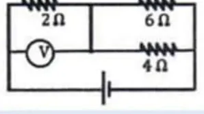
الفولتميتر على $2\Omega$ ⇐ $I=2\,\mathrm{A}$ يتجزأ بين $6\Omega$ و $4\Omega$: $I_6=2\times\dfrac{4}{10}=0.8\,\mathrm{A}$
32022 د1 صناعي
فلز يمر به تيار كثافته $(4\times10^6\,\mathrm{A/m^2)}$، عندما أثر فيه مجال كهربائي شدته $\mathrm{(0.2\,V/m)}$، فكم تساوي مقاومية الفلز بوحدة $\mathrm{(\Omega\cdot m)}$؟
من المعادلة $V=\dfrac{XL}{\sigma A}$ والتي تمثل صورة أخرى من قانون أوم، حيث $(L)$ طول الموصل و $(A)$ مساحة مقطعه، و $(\sigma)$ ثابت الموصلية، فما هي وحدة الكمية $(X)$؟
$V=IR=\dfrac{IL}{\sigma A}$ ⇐ الكمية $X$ هي شدة التيار $I$ ووحدتها الأمبير.
52021 د1
ما الكمية الفيزيائية التي تقاس بوحدة $\dfrac{A}{V\cdot m}$؟
موصل طوله $(L)$ ثابت موصليته $(\sigma)$، مُثلت العلاقة بين فرق الجهد على طرفيه وكثافة شدة التيار المار فيه فكانت كما في الشكل المجاور، ما العلاقة الرياضية التي تمثل ميل الخط المستقيم الناتج؟
إذا علمت أن الشحنات الموجبة التي عبرت مقطع موصل $3$ ميكروكولوم والشحنات السالبة التي عبرت نفس المقطع $2$ ميكروكولوم خلال $20$ ثانية، فما مقدار شدة التيار بوحدة الميكروأمبير؟
سلك نحاسي طوله $L$ ومساحة مقطعه $A$، سحب إلى ثلاثة أمثال طوله السابق، ماذا يحدث لمقاومة السلك ومقاوميته؟
المقاومية خاصية للمادة لا تتغير بالشكل، أما المقاومة فتزداد $9$ مرات لأن الطول يتضاعف 3 مرات والمساحة تقل للثلث.
92021 د2
ما مقدار المقاومة المكافئة في الشكل المجاور؟
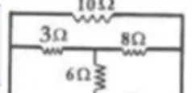
البطارية بين العقدة اليسرى والعقدة اليمنى: $3\parallel6=2\,\Omega$ (بين اليسار والعقدة الوسطى)، ثم $2+8=10\,\Omega$، وهذه موازية لـ $10\,\Omega$ ⇐ $R_{eq}=5\,\Omega$
102021 د1 صناعي
ما الكمية الفيزيائية التي تقاس بوحدة $\mathrm{(V\cdot m/A)}$؟
$\dfrac{V\cdot m}{A}=\Omega\cdot m$ وحدة المقاومية.
112021 د1 صناعي
إذا وصلت $(5)$ مقاومات مقدار كل منها $1$ أوم على التوازي إلى فرق جهد مقداره $(5$ فولت$)$، فما شدة التيار الكهربائي المار في كل مقاومة بوحدة الأمبير؟
على التوازي فرق الجهد على كل مقاومة $\mathrm{5\,V}$ ⇐ $I=\dfrac51=5\,\mathrm{A}$
122021 د2 صناعي
سلك فلزي مقاومته $R$ وطوله $L$ إذا تم سحب السلك إلى ثلاثة أضعاف طوله الأصلي مع بقاء حجمه ثابتاً، فما مقدار مقاومته بعد السحب؟
$L'=3L$ و $A'=\frac A3$ ⇐ $R'=\rho\dfrac{3L}{A/3}=9R$
132021 د2 صناعي
سلك فلزي مقاومته $R$ مساحة مقطعه العرضي $A$ وسرعته الانسياقية $v_d$ موصولة بين نقطتين فرق الجهد بينهما $v$، إذا أعيد تشكيله ليقل طوله إلى النصف فكم تصبح السرعة الانسياقية للإلكترونات الحرة فيه في هذه الحالة؟
$v_d=\dfrac{J}{ne}=\dfrac{E}{\rho ne}=\dfrac{V}{\rho L\,ne}$، بثبوت $V$ ونصف الطول يتضاعف المجال فتتضاعف السرعة الانسياقية.
142018 د2
ينعدم التيار الكهربي بين النقطتين $(d,b)$ عند فتح المفتاح بسبب انعدام:
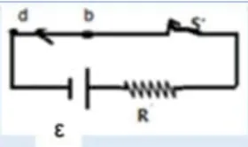
عند فتح المفتاح ينعدم المجال الكهربائي في الأسلاك فتتوقف الحركة الانسياقية للإلكترونات.
152019 د3
في الشكل المجاور، لماذا تنعدم قراءة الأميتر $(A)$ بين $(a,b)$ عند فتح المفتاح $(s)$؟
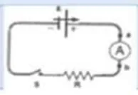
فتح الدارة يُلغي المجال الكهربائي في الموصل فلا يوجد ما يدفع الشحنات.
162020 د2
في الشكل المجاور يمر تيار كهربي في موصل مساحة مقطعه غير منتظمة، إذا تضاعف قطر الموصل أربع مرات فأي العبارات الآتية تعتبر صحيحة؟
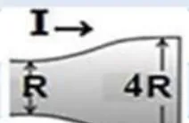
التيار ثابت في كل المقاطع، والمساحة تزداد $16$ مرة ⇐ $J=\dfrac IA$ تقل إلى $\frac1{16}$
172019 د3
إذا كانت كثافة الإلكترونات الحرة في موصل تساوي $(7.5\times10^{28}\,e/m^3)$ ومساحة مقطع الموصل $(4\times10^{-6}\,\mathrm{m^2)}$ وشدة التيار المار فيه $\mathrm{(2.5\,A)}$ فما مقدار السرعة الانسياقية للإلكترونات الحرة فيه بوحدة $\mathrm{(m/s)}$؟
إذا كانت الكثافة الحجمية للإلكترونات الحرة في سلك $(8.5\times10^{28}\,e/m^3)$ والسرعة الانسياقية للإلكترونات الحرة فيه $(2.3\times10^{-5}\,\mathrm{m/s)}$ ما كثافة شدة التيار الكهربائي المار في هذا السلك بوحدة $\mathrm{(A/m^2)}$؟
الشكل المجاور بين موصل مساحة قطعه غير منتظمة، يسري فيه تيار كهربي بالاتجاه المبين، اعتماداً على الشكل، أي العبارات الآتية تعتبر صحيحة؟
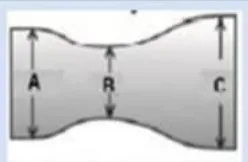
التيار ثابت، وعند $B$ أصغر مساحة فتكون $J$ و $v_d$ والمجال أكبر ما يمكن.
212017 د1
النسبة بين كثافة التيار الكهربي الذي يسري في موصل والمجال الكهربي تسمى:
$\sigma=\dfrac{J}{E}$
222020 د3
إذا مر تيار كهربي شدته $\mathrm{(0.32\,A)}$ في موصل فلزي فما مقدار الشحنة الكهربية التي تخترق مقطعه خلال $\mathrm{(1\,s)}$ بوحدة الكولوم؟
$Q=It=0.32\,\mathrm{C}$
232017 د1
ما مقدار المقاومة المكافئة بين النقطتين $(A,B)$ بوحدة الأوم؟
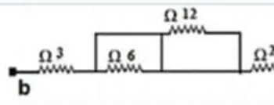
المقاومة $6\Omega$ مقصورة بسلك موازٍ لها، والمقاومة $12\Omega$ موازية لسلك فهي مقصورة أيضاً ⇐ $R=3+2=5\,\Omega$
242017 د2
إذا علمت أن المقاومة المكافئة لمجموعة المقاومات في الشكل المجاور تساوي $3\,\Omega$ فما قيمة $R$ بوحدة الأوم؟
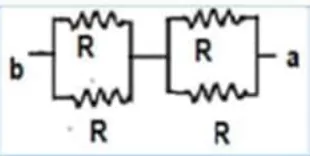
مجموعتان على التوالي كل منهما $R\parallel R=\frac R2$ ⇐ $R_{eq}=R=3\,\Omega$
252017 د3
في الشكل المجاور إذا كانت $R_1\gt R_2$ فإن:
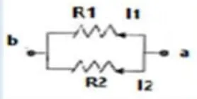
على التوازي فرق الجهد متساوٍ والتيار يتناسب عكسياً مع المقاومة.
262020 د3
وصل طالب ثلاث مقاومات متماثلة كما في الشكل المجاور، إذا كان فرق الجهد بين قطبي البطارية $\mathrm{(36\,V)}$ فما قراءة كل من الفولتميتر $(V_1)$ والفولتميتر $(V_2)$؟
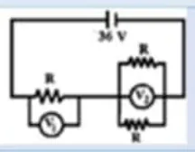
$R$ على التوالي مع $(R\parallel R=\frac R2)$ ⇐ $V_1=36\times\dfrac{R}{1.5R}=24\,\mathrm{V}$ و $V_2=12\,\mathrm{V}$
272020 د3
ما مقدار المقاومة المكافئة بين نقطتين $(A,B)$ بوحدة الأوم؟
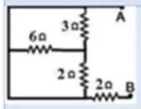
السلك الأيسر والسلك السفلي يصلان النقطة $A$ بالعقدة السفلى مباشرة. المقاومات $3,6,2\,\Omega$ (العمودية) تنتهي جميعها عند العقدة الوسطى التي لا تتصل بـ $B$، فلا يمر فيها تيار. يبقى المسار $A\to B$ عبر $2\,\Omega$ السفلية فقط ⇐ $R_{AB}=2\,\Omega$
282019 د2
ما مقدار المقاومة المكافئة لمجموعة المقاومات الموصولة بين النقطتين $(a,b)$ في الشكل المجاور، بوحدة الأوم؟
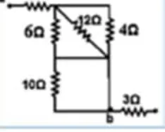
العقدة السفلى لـ $6\Omega$ متصلة بسلك مع الطرف السفلي لـ $12\Omega$ و $4\Omega$، فتتوازى الثلاث: $\frac16+\frac1{12}+\frac14=\frac12$ ⇐ $2\,\Omega$. المقاومة $10\Omega$ مقصورة بسلك موازٍ لها، و $3\Omega$ خارج المسار ⇐ $R_{ab}=2+2=4\,\Omega$
292017 د1
ما مقدار نصف قطر مقطع سلك $(L)$؛ بحيث مقاومته تكافئ مقاومة أربع أسلاك نصف قطر كل منها $(r)$؛ وطول كل منها $(L)$ موصولة على التوالي ولكنها من نفس النوع؟
المقاومة الكلية $=4\rho\dfrac{L}{\pi r^2}=\rho\dfrac{L}{\pi r'^2}$ ⇐ $r'^2=\dfrac{r^2}{4}$ ⇐ $r'=0.5\,r$
302020 د3
مقاومة فلزية طولها $L$ ومقاومة مادتها $\rho$ أعيد تشكيلها بحيث تضاعف طولها مرتين، فكم يصبح مقدار مقاوميتها؟
المقاومية خاصية للمادة لا تتغير بتغير الأبعاد.
312020 د1
سلك فلزي مقاومته $R$، ومساحة مقطعه العرضي $(A)$ وطوله $(L)$ موصول بين نقطتين فرق الجهد بينهما $V$ إذا أعيد تشكيله ليصبح طوله $2L$، مع بقاء فرق الجهد بين طرفيه ثابت، ماذا يحدث لشدة التيار لوحدة المساحة في هذه الحالة؟
الشكل المرسوم يمثل العلاقة بين مقاومة موصل $R$ وطوله $L$ إذا كانت مساحة المقطع للموصل $A$ والمقاومية الكهربية له $(\rho)$، فإن ميل الخط المستقيم يمثل:
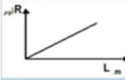
$R=\dfrac{\rho}{A}L$
332017 د3
يعبر الشكل المجاور عن موصل مصنوع من:
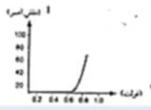
المنحنى غير خطي (لا يحقق قانون أوم) فهو لمادة شبه موصلة لا أومية.
342019 د1
في الدارة الكهربائية المجاورة، إذا علمت أن قراءة الأميتر والمفتاح $(S)$ مفتوح تساوي $\mathrm{(2\,A)}$، فما قراءة الأميتر $(A)$ بعد غلق المفتاح بوحدة الأمبير؟
ماذا يحدث عند تقليل فرق الجهد بين طرفي سلك فلزي (مقاومة أومية)؟
المقاومة الأومية لا تعتمد على فرق الجهد.
372017 د3
رسمت العلاقة بيانياً لأربعة موصلات مختلفة بين التيار المار فيها وفرق الجهد الكهربي بين طرفيها كما في الشكل المجاور، أي من هذه الموصلات لها أكبر مقاومة؟
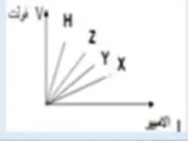
في منحنى $(V-I)$ الميل يمثل المقاومة، والموصل $H$ ميله أكبر.
382023 د1
موصل فلزي، الكثافة الحجمية للإلكترونات الحرة فيه $(2\times10^{28}\,e/m^3)$ موصول مع مصدر فرق جهد مقداره $\mathrm{(10\,V)}$، الشكل المجاور يمثل العلاقة بين السرعة الانسياقية للإلكترونات الحرة فيه ومقلوب طوله، فإذا كان ميل الخط المستقيم الممثل لهذه العلاقة يساوي 5، فما موصلية السلك بوحدة $\mathrm{(\Omega^{-1}\cdot m^{-1})}$؟
وصلت مقاومة فلزية بفرق جهد مقداره $\mathrm{(10\,V)}$ لفترة زمنية $(\Delta t)$، فتولدت فيها كمية من الطاقة الحرارية مقدارها $\mathrm{(2000\,J)}$ ما مقدار كمية الشحنة التي عبرت مقطع من هذه المقاومة خلال هذه الفترة الزمنية بوحدة (الكولوم)؟
$W=QV$ ⇐ $Q=\dfrac{2000}{10}=200\,\mathrm{C}$
402023 استكمالية
ثلاثة أسلاك فلزية مصنوعة من مواد مختلفة، ومتساوية في مساحة المقطع، الشكل المجاور يُبين العلاقة البيانية بين مقاومة هذه الأسلاك وأطوالها، أي الآتية تعتبر صحيحة فيما يتعلق بالمقاومية لكل منها؟
موصلان فلزيان من مادتين مختلفتين، لهما نفس الطول، ومختلفان في الحجم، تم توصيلهما على التوالي مع بطارية قوتها الدافعة الكهربائية $\mathrm{(6\,V)}$ فولت، فكان فرق الجهد بين طرفي كل موصل $\mathrm{(3\,V)}$، أيّ العبارات الآتية تعتبر صحيحة؟
التيار نفسه وفرق الجهد نفسه ⇐ $R_1=R_2$ ⇐ $\dfrac{\rho_1L}{A_1}=\dfrac{\rho_2L}{A_2}$
422024 د1
موصلان فلزيان مصنوعان من نفس المادة، إذا كانت شدة التيار الكهربائي المار فيهما متساوية، والسرعة الانسياقية للإلكترونات الحرة في الموصل الأول تساوي ثلاثة أمثال السرعة الانسياقية للإلكترونات الحرة في الموصل الثاني، فما النسبة بين نصف قطر مقطعيهما $(\frac{r_1}{r_2})$؟
يبين الشكل المجاور موصل مساحة مقطعه غير منتظمة، أي العبارات الآتية تعتبر صحيحة عند مرور تيار كهربائي فيه؟
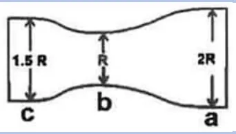
التيار ثابت في جميع المقاطع $(I_a=I_b=I_c)$، وكثافة التيار $J=\dfrac IA$ أكبر عند المقطع الأصغر. ملاحظة: الترتيب الدقيق من الشكل $J_b\gt J_c\gt J_a$ (لأن $R_b\lt 1.5R\lt 2R$)، ولا يوجد خيار مطابق تماماً؛ الخيار (ج) هو الوحيد الذي يجعل التيار متساوياً وهو ما اعتمده مفتاح الإجابة.
442024 استكمالية
الشكل المجاور يمثل العلاقة بين المقاومة ومقلوب مساحة المقطع $(A)$ لمجموعتين من الأسلاك كل مجموعة مصنوعة من معدن مختلف وعند نفس درجة الحرارة، علماً بأن طول كل سلك في كل مجموعة $\mathrm{(1\,m)}$، أي الاختيارات التالية يمثل الإجابة الصحيحة لكل مجموعة؟
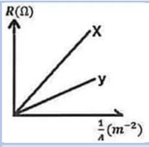
$R=\rho L\cdot\dfrac1A$ ⇐ الميل $=\rho L$، وميل $X$ أكبر ⇐ $\rho_x\gt \rho_y$ (الخيار الوحيد الذي يحقق ذلك).
452025 د1
عند زيادة فرق الجهد بين طرفي سلك فلزي (مقاومة أومية)، فأي الآتية صحيح؟
المقاومة الأومية لا تعتمد على فرق الجهد.
462025 د1
سلك فلزي مقاومته $(R)$ ومساحة مقطعه العرضي $(A)$ موصول بين نقطتين، فرق الجهد بينهما $(V)$ إذا أعيد تشكيله ليقل طوله إلى النصف، فماذا يحدث للسرعة الانسياقية للإلكترونات الحرة فيه في هذه الحالة إذا أعيد توصيله إلى نفس فرق الجهد؟
$v_d=\dfrac{\sigma V}{neL}$ ⇐ نصف الطول يضاعف السرعة الانسياقية.
472025 د2
سلك من الألمنيوم مقاومته $R$، سحب إلى أربع أضعاف طوله السابق، فما مقاومة السلك بعد سحبه؟
$L'=4L$ و $A'=\frac A4$ ⇐ $R'=16R$
482025 د2
يبين الشكل المجاور موصلاً مساحة مقطعه غير منتظمة يسري فيه تيار كهربائي. فما ترتيب المقاطع من حيث السرعة الانسياقية $V_d$؟
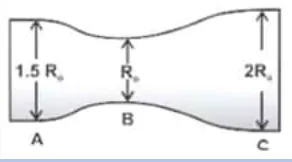
$v_d=\dfrac{I}{neA}$ ⇐ الأصغر مساحة $(B)$ أسرع، ثم $A$ $(1.5R_o)$ ثم $C$ $(2R_o)$.
492025 د2
الشكل المجاور يمثل العلاقة بين كثافة شدة التيار الكهربائي في موصل والمجال الكهربائي، ماذا يمثل ميل الخط المستقيم؟
$J=\sigma E$
السؤال الثاني (أ): ما المقصود بـ
12022 د1 علمي وصناعي و2017 د3
كثافة التيار الكهربائي
أظهر الإجابة
شدة التيار الكهربائي المار عبر وحدة المساحة من مقطع الموصل العمودي على اتجاه التيار: $J=\dfrac IA$، ووحدتها $\mathrm{A/m^2}$
22021 د2 علمي وصناعي
ثابت الموصلية
أظهر الإجابة
النسبة بين كثافة التيار في موصل وشدة المجال الكهربائي المؤثر فيه: $\sigma=\dfrac JE$، وهو مقدار ثابت للمادة عند درجة حرارة معينة.
32021 د2 علمي وصناعي
كثافة شدة التيار
أظهر الإجابة
شدة التيار الكهربائي المار عبر وحدة المساحة من مقطع الموصل العمودي على اتجاه التيار.
42020 د2
المقاومة الأومية
أظهر الإجابة
المقاومة التي تبقى قيمتها ثابتة مهما تغير فرق الجهد بين طرفيها عند ثبوت درجة الحرارة (تحقق قانون أوم، والعلاقة بين $V$ و $I$ خطية).
52019 و2020 د2
الموصلية
أظهر الإجابة
مقلوب المقاومية، وتعبر عن قدرة المادة على توصيل التيار الكهربائي: $\sigma=\dfrac1\rho$
62022 د1 علمي
وضح الفرق بين التيار الإلكتروني والتيار الاصطلاحي من حيث التعريف.
أظهر الإجابة
التيار الإلكتروني: حركة الإلكترونات من القطب السالب إلى القطب الموجب خارج المصدر. التيار الاصطلاحي: اتجاه حركة الشحنات الموجبة، من القطب الموجب إلى القطب السالب خارج المصدر (عكس حركة الإلكترونات).
72022 د2 علمي
ماذا نعني بالمقاومة اللاأومية؟
أظهر الإجابة
المقاومة التي تتغير قيمتها بتغير فرق الجهد بين طرفيها (لا تحقق قانون أوم)، وتكون العلاقة بين $V$ و $I$ غير خطية، مثل الثنائي وأشباه الموصلات.
82023 استكمالية
قانون جول
أظهر الإجابة
الطاقة الحرارية المتولدة في موصل تتناسب طردياً مع مربع شدة التيار المار فيه ومع مقاومته ومع زمن مرور التيار: $W=I^2Rt$
92024 د2
التيار الاصطلاحي
أظهر الإجابة
التيار الذي يكون اتجاهه باتجاه حركة الشحنات الموجبة، أي من القطب الموجب إلى القطب السالب خارج المصدر.
102024 استكمالية
السرعة الانسياقية
أظهر الإجابة
متوسط سرعة الإلكترونات الحرة في الموصل باتجاه معاكس للمجال الكهربائي المؤثر فيه: $v_d=\dfrac{I}{neA}$
112025 د2
المقاومية
أظهر الإجابة
مقاومة موصل من المادة طوله $\mathrm{1\,m}$ ومساحة مقطعه $\mathrm{1\,m^2}$ عند درجة حرارة معينة، وهي خاصية للمادة: $\rho=\dfrac{RA}{L}$
السؤال الثاني (ب): علّل لما يلي
12022 د1 صناعي
ارتفاع درجة حرارة المواد الموصلة عند مرور تيار كهربائي فيها.
أظهر الإجابة
لأن الإلكترونات الحرة أثناء حركتها تتصادم مع ذرات (أيونات) الموصل فتفقد جزءاً من طاقتها الحركية على شكل طاقة حرارية.
22022 د2 علمي
حركة الإلكترونات المتعرجة في الموصل إذا ما تعرضت إلى مجال كهربائي.
أظهر الإجابة
بسبب تصادم الإلكترونات المستمر مع ذرات الموصل وتغير اتجاه حركتها بعد كل تصادم، مع انسياقها بالمحصلة بعكس اتجاه المجال.
32021 د1
تكون السرعة الانسياقية للإلكترونات الحرة في الموصلات صغيرة جداً.
أظهر الإجابة
بسبب كثرة تصادم الإلكترونات الحرة مع ذرات الموصل أثناء حركتها مما يعيق حركتها.
42021 د1
تضيء المصابيح بسرعة عند غلق الدارة رغم بعدها عن مصدر الجهد.
أظهر الإجابة
لأن المجال الكهربائي ينتشر في أسلاك الدارة بسرعة كبيرة جداً (قريبة من سرعة الضوء) فتبدأ الإلكترونات الحرة الموجودة في جميع أجزاء الدارة بالحركة في آنٍ واحد تقريباً.
52017 د1 و2024
تضيء المصابيح بسرعة لحظة غلق الدارة رغم أن السرعة الانسياقية للإلكترونات صغيرة جداً.
أظهر الإجابة
لأن المجال الكهربائي ينتشر في أسلاك الدارة بسرعة قريبة من سرعة الضوء، فتبدأ جميع الإلكترونات الحرة في الدارة (ومنها الموجودة في المصباح) بالحركة في نفس اللحظة تقريباً.
62020 د3 و2023
توصل الأجهزة في المنازل على التوازي.
أظهر الإجابة
حتى يكون فرق الجهد على كل جهاز مساوياً لفرق جهد المصدر، وحتى يعمل كل جهاز بشكل مستقل فلا يتأثر باقي الأجهزة عند تعطل أحدها أو إطفائه.
72019 د2
ينعدم (يتلاشى) التيار الكهربائي في دارة كهربائية عند فتح الدارة.
أظهر الإجابة
لأن فتح الدارة يُلغي المجال الكهربائي داخل الموصلات، فتتوقف الحركة الانسياقية للإلكترونات الحرة وتعود لحركتها العشوائية.
82020 د3
السرعة الانسياقية صغيرة جداً.
أظهر الإجابة
بسبب كثرة تصادم الإلكترونات الحرة مع ذرات الموصل أثناء حركتها.
السؤال الثاني (ج، د): قارن، فسّر
12023 د2
قارن بين المقاومة الأومية والمقاومة اللاأومية من حيث: المفهوم.
أظهر الإجابة
الأومية: تبقى قيمتها ثابتة مهما تغير فرق الجهد بين طرفيها (العلاقة بين $V$ و $I$ خطية). اللاأومية: تتغير قيمتها بتغير فرق الجهد بين طرفيها (العلاقة بين $V$ و $I$ غير خطية).
22024 استكمالية
فسّر: القدرة الكهربائية الكلية المستنفدة في المقاومات الموصولة على التوالي أو التوازي، تساوي مجموع القدرة المستهلكة في كل مقاومة على حدة.
أظهر الإجابة
حسب قانون حفظ الطاقة: الطاقة التي يزود بها المصدر تتوزع على المقاومات وتتحول فيها إلى طاقة حرارية، فالقدرة الكلية تساوي مجموع القدرات: $P=P_1+P_2+\dots$
السؤال الثالث: المسائل الحسابية
12022 د1 علمي وصناعي
الشكل المجاور يبين العلاقة بين مقاومة موصل فلزي وطوله. إذا كانت مساحة المقطع العرضي للموصل ثابتة ومنتظمة ومقدارها $\mathrm{2\,mm^2}$، احسب: (أ) موصلية الفلز (ب) مقدار السرعة الانسياقية للإلكترونات الحرة، إذا كان عدد الإلكترونات الحرة في وحدة الحجم من هذا الموصل تساوي $(6.25\times10^{28}\,e/m^3)$ ويمر فيه تيار شدته $\mathrm{2A}$
موصل طوله $\mathrm{(400\,m)}$ ومساحة مقطعه $\mathrm{(0.6\,mm^2)}$، رُسمت العلاقة البيانية بين شدة المجال الكهربائي وشدة التيار المار فيه فكانت كما في الشكل المجاور، إذا علمت أن ميل الخط المستقيم يساوي $\mathrm{(0.01\,V/m\cdot A)}$، احسب: (1) المقاومية (2) مقاومة الموصل (3) شدة المجال الكهربائي عندما تكون شدة التيار المار في الموصل $\mathrm{(2A)}$
في الشكل المجاور ثلاثة منحنيات $(1,2,3)$ توضح العلاقة بين شدة التيار الكهربائي المار في ثلاث مقاومات مع فرق الجهد بين طرفي كل مقاومة. هل هذه المقاومات أومية؟ فسر إجابتك.
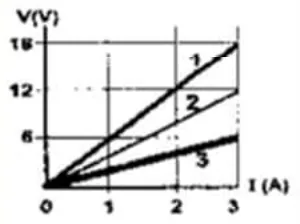
أظهر الإجابة
نعم، جميعها أومية؛ لأن العلاقة بين فرق الجهد وشدة التيار لكل منها خطية (خط مستقيم يمر بنقطة الأصل)، أي أن النسبة $\dfrac VI$ (الميل = المقاومة) ثابتة لجميع قيم الجهد.
42021 د1
سلك نحاس طوله $\mathrm{(100\,m)}$ ومساحة مقطعه العرضي $\mathrm{(1\,mm^2)}$، ويحمل تياراً كهربائياً شدته $\mathrm{(20\,A)}$ إذا كانت مقاومية النحاس $(1.72\times10^{-8}\,\Omega\cdot m)$، والكثافة الحجمية للإلكترونات الحرة فيه $(8.4\times10^{28}\,e/m^3)$، فاحسب: (1) كثافة شدة التيار في الموصل (2) السرعة الانسياقية (3) شدة المجال الكهربائي.
سلك فلزي منتظم قطر المقطع $\mathrm{(2\,mm)}$ وطوله $\mathrm{100\,m}$ ومقاوميته $(\pi\times10^{-7}\,\Omega\cdot m)$ وصل طرفاه بمصدر لفرق الجهد $\mathrm{10\,V}$ إذا علمت أن كثافة الإلكترونات $(5.86\times10^{28}\,e/m^3)$. احسب: (أ) مقاومة الموصل (ب) شدة التيار (ج) السرعة الانسياقية (د) المجال الكهربي.
أظهر الإجابة
$r=1\,\mathrm{mm}$ ⇐ $A=\pi\times10^{-6}\,\mathrm{m^2}$ (أ) $R=\dfrac{\pi\times10^{-7}\times100}{\pi\times10^{-6}}=10\,\Omega$ (ب) $I=\dfrac{10}{10}=1\,\mathrm{A}$ (ج) $v_d=\dfrac{1}{5.86\times10^{28}\times1.6\times10^{-19}\times\pi\times10^{-6}}\approx3.4\times10^{-5}\,\mathrm{m/s}$ (د) $E=\dfrac{10}{100}=0.1\,\mathrm{V/m}$ (في نص الامتحان كُتبت الكثافة $5.86\times10^{-8}$ والصحيح $10^{28}$.)
72020 د1
سلك من الحديد طوله $\mathrm{(100\,m)}$، ومساحة مقطعه $\mathrm{(1\,mm^2)}$، ويحمل تياراً كهربائياً شدته $\mathrm{(20\,A)}$، إذا كانت مقاومية الحديد $(9.7\times10^{-8}\,\Omega\cdot m)$ احسب ما يأتي: (1) فرق الجهد الكهربائي بين طرفي السلك (2) السرعة الانسياقية للإلكترونات الحرة فيه، إذا كانت كثافة الإلكترونات الحرة للحديد $(8.5\times10^{28}\,e/m^3)$
سلك نحاسي طوله $\mathrm{(200\,m)}$ ومساحة مقطعه العرضي $\mathrm{(2\,mm^2)}$، ويحمل تياراً كهربائياً شدته $\mathrm{(10\,A)}$ إذا كانت موصلية سلك النحاس تساوي $(5.8\times10^7\,\Omega^{-1}\cdot m^{-1})$ فاحسب: (1) شدة المجال الكهربي (2) إذا استخدم جزء من السلك طوله $\mathrm{(100\,m)}$ فما مقدار مقاوميته ومقاومة هذا الجزء من السلك؟
في تجربة لقياس مقاومة سلك طويل من الفضة مساحة مقطعه $\mathrm{(1\,mm^2)}$، وصل طرفا السلك في دارة كهربائية كما في الشكل (أ)، ثم أخذت قراءات مختلفة لتيار الدارة وفرق الجهد بين طرفي السلك، ومثلت العلاقة بينهما بيانياً كما في الشكل (ب). إذا علمت أن درجة حرارته بقيت ثابتة وأن مقاومية الفضة $(1.6\times10^{-8}\,\Omega\cdot m)$، معتمداً على الأشكال، أجب عما يأتي: (1) الطول الكلي للسلك الذي استخدم في التجربة (2) احسب مقاومة السلك إذا أعيد تشكيله ليزداد طوله للضعف.
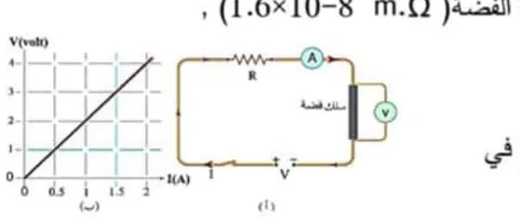
أظهر الإجابة
من الشكل: $R=\dfrac{4}{2}=2\,\Omega$ (1) $L=\dfrac{RA}{\rho}=\dfrac{2\times10^{-6}}{1.6\times10^{-8}}=125\,\mathrm{m}$ (2) $L'=2L$ و $A'=\frac A2$ ⇐ $R'=4R=8\,\Omega$
112018 د1
مقاومة كهربية تستهلك طاقة بمعدل $\mathrm{(400\,J/s)}$ وتعمل على فرق جهد مقداره $\mathrm{100\,V}$ صنعت من سلك فلزي مساحة مقطعه العرضي $(2.8\times10^{-8}\,\mathrm{m^2)}$ وطول $\mathrm{25\,m}$ احسب: (1) موصلية السلك الفلزي (2) شدة المجال الكهربي في المقاومة (3) الكثافة الحجمية للإلكترونات الحرة في سلك المقاومة إذا كانت السرعة الانسياقية للإلكترونات الحرة $(7.4\times10^{-2}\,\mathrm{m/s)}$
إذا كانت الكثافة الحجمية للإلكترونات الحرة في سلك نحاس $(8.5\times10^{28}\,e/m^3)$ ومساحة مقطعه العرضي $(4\times10^{-6}\,\mathrm{m^2)}$ وشدة التيار المار $\mathrm{(2\,A)}$ ومقاوميته $(1.7\times10^{-8}\,\Omega\cdot m)$. احسب ما يأتي: (أ) السرعة الانسياقية للإلكترونات الحرة (ب) شدة المجال الكهربائي المؤثرة في السلك.
يمثل الشكل المجاور العلاقة بين شدة التيار الكهربي المار في موصل فلزي وفرق الجهد بين طرفيه إذا كان طول الموصل $\mathrm{(25\,m)}$ ونصف قطر مقطعه العرضي $\mathrm{(0.5\,mm)}$. احسب ثابت الموصلية الكهربية للموصل.
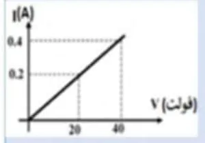
أظهر الإجابة
من الشكل: $R=\dfrac{40}{0.4}=100\,\Omega$، $A=\pi(0.5\times10^{-3})^2\approx7.85\times10^{-7}\,\mathrm{m^2}$ $\sigma=\dfrac{L}{RA}=\dfrac{25}{100\times7.85\times10^{-7}}\approx3.18\times10^5\,\Omega^{-1}m^{-1}$
142020 د2
يمثل الشكل المجاور جزء من دارة كهربائية إذا كانت قراءة الفولتميتر $18$ فولت، فما قراءة الأميتر؟
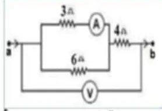
أظهر الإجابة
$(3\parallel6)=2\,\Omega$، $R_{ab}=2+4=6\,\Omega$ ⇐ $I=\dfrac{18}{6}=3\,\mathrm{A}$ فرق الجهد على التفرع $=3\times2=6\,\mathrm{V}$ ⇐ قراءة الأميتر $=\dfrac63=2\,\mathrm{A}$
152020 د3
في الدارة الكهربائية المجاورة، احسب قراءة الأميتر.
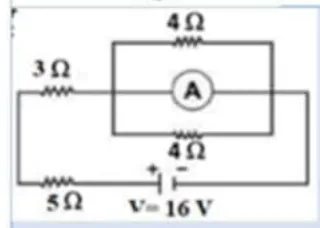
أظهر الإجابة
الأميتر المثالي (مقاومته صفر) موصول على التوازي مع المقاومتين $4\Omega$ فيقصرهما ويمر فيه كل التيار. $R=3+5=8\,\Omega$ ⇐ $I=\dfrac{16}{8}=2\,\mathrm{A}$ (قراءة الأميتر)
162023 د1
فرن كهربائي مكتوب عليه: $(200\,\mathrm{V},\ 2000\,\mathrm{W)}$، صُنعت مقاومته من سلك فلزي مساحة مقطعه العرضي $\mathrm{(0.2\,mm^2)}$، وموصلية مادته $(5\times10^7\,\Omega^{-1}\cdot m^{-1})$، إذا تمّ تشغيله على فرق جهد $\mathrm{(200\,V)}$، احسب: (1) أكبر تيار كهربائي يمر في مقاومة الفرن (2) طول السلك الفلزي الذي صنعت منه مقاومة الفرن (3) تكاليف تشغيل الفرن الكهربائي لمدة شهر بمعدل $(3)$ ساعات يومياً، علماً بأن سعر الكيلو واط ساعة $(10)$ قروش.
موصل فلزي من الألمنيوم طوله $\mathrm{(200\,m)}$، منتظم المقطع ومساحة مقطعه العرضي $\mathrm{(2\,mm^2)}$ يمر به تيار شدته $\mathrm{(5\,A)}$ فإذا كانت مقاومية مادة الألمنيوم $(2.8\times10^{-8}\,\Omega\cdot m)$ والكثافة الحجمية للإلكترونات الحرة فيه $(6\times10^{28}\,e/m^3)$. احسب: (1) كثافة شدة التيار الكهربائي المار في الموصل (2) السرعة الانسياقية للشحنات الحرة في الموصل (3) مقاومة الموصل.
أظهر الإجابة
(1) $J=\dfrac{5}{2\times10^{-6}}=2.5\times10^6\,\mathrm{A/m^2}$ (2) $v_d=\dfrac{J}{ne}=\dfrac{2.5\times10^6}{6\times10^{28}\times1.6\times10^{-19}}\approx2.6\times10^{-4}\,\mathrm{m/s}$ (في مفتاح الإجابة $10^{-6}$ وهو خطأ في الأس) (3) $R=\dfrac{2.8\times10^{-8}\times200}{2\times10^{-6}}=2.8\,\Omega$
182023 د2
مقاومة فلزية $(R)$ طولها $(L)$ ومساحة مقطعها $(A)$ وثابت الموصلية لمادتها $(\sigma)$ وكثافة شدة التيار الكهربائي $(J)$، وصلت مع مصدر فرق جهد قوته الدافعة الكهربائية $(\varepsilon)$، ومقاومته الداخلية $(r)$ تساوي ربع المقاومة الفلزية $(R)$، أثبت أن موصلية المقاومة الفلزية $(R)$ تعطى بالعلاقة الآتية: $\sigma=\dfrac{5JL}{4\varepsilon}$
أظهر الإجابة
$I=\dfrac{\varepsilon}{R+\frac R4}=\dfrac{4\varepsilon}{5R}$ ⇐ $R=\dfrac{4\varepsilon}{5I}$ $\sigma=\dfrac{L}{RA}=\dfrac{5IL}{4\varepsilon A}=\dfrac{5JL}{4\varepsilon}$ لأن $J=\dfrac IA$
192023 استكمالية
سلك فلزي مساحة مقطعه العرضي $\mathrm{(1.45\,mm^2)}$، ويحمل تياراً كهربائياً شدته $\mathrm{(7.7\,A)}$، إذا كانت مقاومية السلك $(2.5\times10^{-6}\,\Omega\cdot m)$ والكثافة الحجمية للإلكترونات الحرة فيه $(2.5\times10^{28}\,e/m^3)$، احسب: (1) كثافة شدّة التيار في السلك (2) السرعة الانسياقيّة (3) شدّة المجال الكهربائي المؤثر في السلك.
سخان كهربائي يعمل على فرق جهد $\mathrm{(210\,V)}$ وينتج كمية من الحرارة مقدارها $(3\times10^4\,\mathrm{J)}$ في الدقيقة، احسب: (1) قدرة السخان (2) مقدار كمية الشحنة التي عبرت مقطع من سلك السخان خلال زمن معين (3) طول السلك المستخدم إذا كانت مقاومة المتر الواحد منه $(30\,\Omega)$ (4) تكاليف استخدام السخان ساعتين يومياً ولمدة أسبوع، حيث سعر الكيلوواط.ساعة $(10$ قروش$)$.
أظهر الإجابة
(1) $P=\dfrac{3\times10^4}{60}=500\,\mathrm{W}$ (2) $I=\dfrac PV=\dfrac{500}{210}\approx2.38\,\mathrm{A}$، وخلال دقيقة: $Q=It\approx143\,\mathrm{C}$ (أو $Q=\dfrac WV=\dfrac{3\times10^4}{210}$) (3) $R=\dfrac{V^2}{P}=\dfrac{210^2}{500}=88.2\,\Omega$ ⇐ $L=\dfrac{88.2}{30}=2.94\,\mathrm{m}$ (4) $0.5\times2\times7=7\,\mathrm{kWh}$ ⇐ $70$ قرشاً
212024 د1
يمثل الشكل المجاور العلاقة بين شدة التيار الكهربائي المار في موصل فلزي وفرق الجهد الكهربائي بين طرفيه، إذا كان طول الموصل $\mathrm{(10\,m)}$ وقطر مقطعه العرضي $\mathrm{(3\,mm)}$ والكثافة الحجمية للإلكترونات الحرة لمادة الموصل $(n_e=9\times10^{25}\,e/m^3)$. احسب: السرعة الانسياقية للإلكترونات الحرة داخل الموصل تحت تأثير مجال كهربائي شدته $\mathrm{(0.3\,N/C)}$.
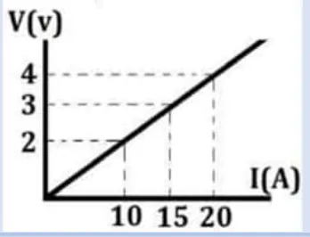
أظهر الإجابة
من الشكل: $R=\dfrac{4}{20}=0.2\,\Omega$، $A=\pi(1.5\times10^{-3})^2\approx7.07\times10^{-6}\,\mathrm{m^2}$ $\sigma=\dfrac{L}{RA}\approx7.07\times10^6\,\Omega^{-1}m^{-1}$ ⇐ $J=\sigma E\approx2.12\times10^6\,\mathrm{A/m^2}$ $v_d=\dfrac{J}{ne}=\dfrac{2.12\times10^6}{9\times10^{25}\times1.6\times10^{-19}}\approx0.147\,\mathrm{m/s}$
222024 د2
يمثل الشكل المجاور سلكاً فلزياً مساحة مقطعه العرضي $(A)$ وعدد الإلكترونات الحرة في وحدة المساحة من مادته $(n_e)$، أجب عن الأسئلة الآتية: (1) أثبت أن كثافة التيار الكهربائي تعطى بالعلاقة $(J=n_eV_dq_e)$ (2) لماذا تكون السرعة الانسياقية $(V_d)$ صغيرة؟
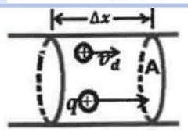
أظهر الإجابة
(1) عدد الإلكترونات في الحجم $A\,\Delta x$ هو $n_eA\,\Delta x$، والشحنة $\Delta Q=n_eq_eA\,\Delta x$ $I=\dfrac{\Delta Q}{\Delta t}=n_eq_eA\dfrac{\Delta x}{\Delta t}=n_eq_eAV_d$ ⇐ $J=\dfrac IA=n_eV_dq_e$ (2) بسبب كثرة تصادم الإلكترونات الحرة مع ذرات الموصل أثناء حركتها.
232024 د2
سلك موصل، إذا كانت كثافة شدة التيار الكهربائي المار فيه $(2\times10^8\,\mathrm{A/m^2)}$، وشدة المجال الكهربائي المؤثر فيه $\mathrm{(12\,V/m)}$، احسب: (1) ثابت الموصلية لهذا السلك (2) الطول اللازم من هذا السلك لعمل سخان كهربائي قدرته $\mathrm{(1.6\,kW)}$ ويعمل على فرق جهد $\mathrm{(240\,V)}$ ومساحة مقطعه $\mathrm{(0.6\,mm^2)}$.
سلك من الحديد طوله $(2\pi\,\mathrm{m)}$ وقطر مقطعه $\mathrm{(1\,mm)}$ وصل بفرق جهد مقداره $\mathrm{(6\,V)}$ إذا كانت مقاومية الحديد $(9.4\times10^{-8}\,\Omega\cdot m)$، احسب: (1) مقاومة سلك الحديد (2) كثافة شدة التيار المار في السلك (3) شدة المجال الكهربائي المؤثرة في السلك (4) مقاومة السلك إذا أعيد تشكيله ليصبح طوله $(75\%)$ مما كان عليه.
مقاومة فلزية $(R)$ طولها $(L)$ ومساحة مقطعها $(A)$ وثابت الموصلية لمادتها $(\sigma)$، وصلت مع فرق جهد قوته الدافعة $(\varepsilon)$، ومقاومته الداخلية $(r)$ تساوي ثلث المقاومة الفلزية $(R)$، أثبت أن شدة المجال الكهربائي $(E)$ المؤثر في المقاومة الفلزية $(R)$، يعطى بالعلاقة الآتية: $E=\dfrac{3\varepsilon}{4L}$